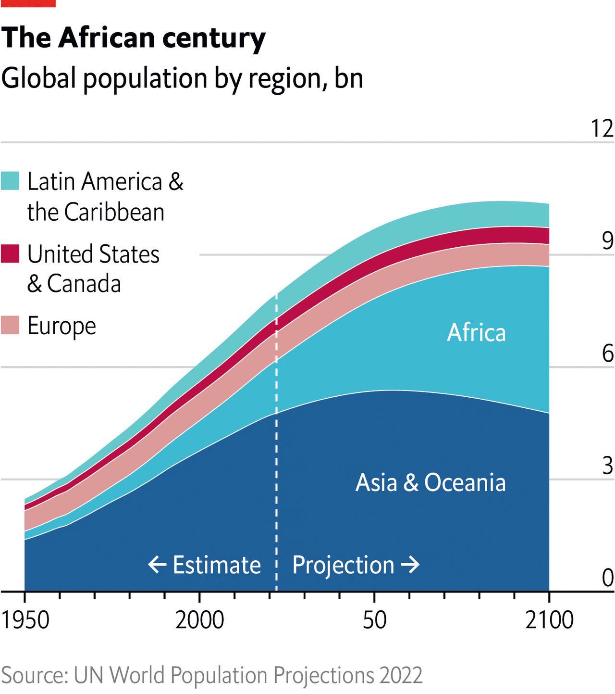
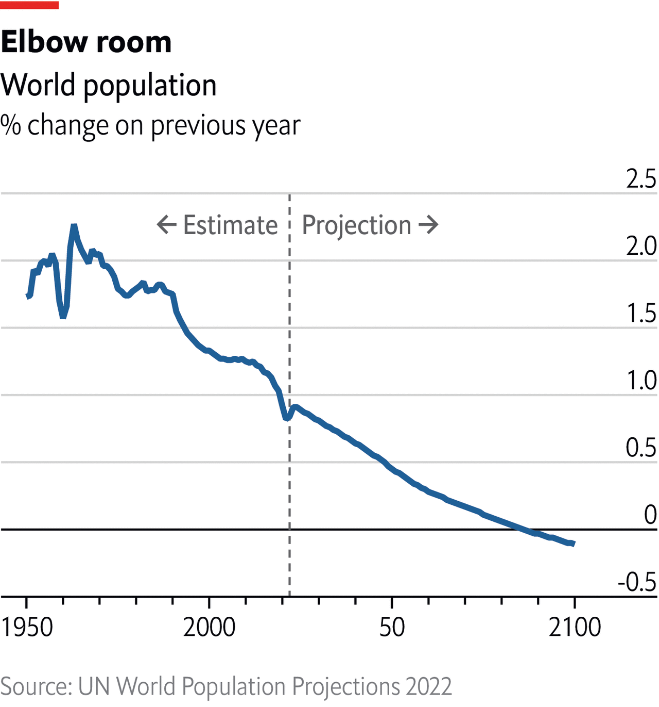

Which countries are driving the world’s population growth?
The UN expects the global population to reach 8bn in November, and to surpass 10bn this century
AFTER IT EMERGED in July that Elon Musk had fathered twins last year, the billionaire tweeted that “a collapsing birth rate is the biggest danger civilisation faces by far”. The UN’s population forecast, published today, should give him partial reassurance. True, birth rates are falling and the population of some countries is shrinking. But the UN thinks the number of humans will reach 8bn on November 15th. Its best guess is that the global population will grow to 10.4bn by the mid-2080s, and stay there for the rest of the century. Where will this growth take place?

In 1950 each woman bore five children on average. As families flocked to cities, and women gained education and access to contraception, that number started to fall. The global fertility rate plunged to 2.3 in 2021, and is expected to reach 2.1—roughly the rate at which births offset deaths in populations with low mortality—by 2050. The UN’s population forecast for 2100 is 500m lower than the projection it made in 2019, largely because Chinese women are having fewer children than expected. Humanity will continue making plenty of babies for a while: the number of newborns is expected to rise from 134m in 2021 to 138m a year in 2040-45. Even so, the world is getting older. Between 1990 and 2019 life expectancy at birth rose by nearly nine years to 72.8. The share of people aged 65 and older will rise from 10% this year to 16% in 2050.

Although birth rates are falling and lifespans lengthening almost everywhere, differences in age structure and rates of change among countries and regions will lead to huge shifts in their relative sizes. India is expected to replace China as the world’s most populous country next year. East Asia, including China, will soon shrink, but South Asia—India’s region—will continue growing for decades. Europe began its demographic decline last year. By the end of the century Germany’s population is expected to be less than 70m, lower than in the 1950s (in high-income countries, any population growth will come from immigration). But there will be many more Africans, in part because the region’s population is still young. Sub-Saharan Africa’s share of the globe’s population will rise from one-seventh today to more than one-fifth by 2050. Just eight countries will account for more than half the rise in population expected by 2050: the Democratic Republic of Congo, Egypt, Ethiopia, India, Nigeria, Pakistan, the Philippines and Tanzania.
Disasters, whether natural or man-made, have little lasting effect on birth and death rates. The UN’s boffins are treating today’s combination of calamities—covid-19 and the war in Ukraine—as a “short-term disruption that has no long-term implications”, says Patrick Gerland, the UN’s chief being counter. Good policies, though, can have dramatic effects. In the past 40 years Bangladesh, which raised women’s literacy and employment, has cut its fertility rate from more than six to about two. In Pakistan, of which Bangladesh was once a part, women’s literacy has risen much more slowly. Their fertility has fallen at two-thirds the rate of that of their sisters in Bangladesh.
Falling birth rates can cause problems, as Mr Musk warns. Fewer workers will have to support more pensioners; societies may become less inventive. But fast population growth in some countries is also dangerous, especially if their economies do not expand quickly enough to employ the young productively. In Angola, where the population has grown by 3% a year since the 1970s, the number of people living on less than $1.90 a day more than doubled from 2008 to 2018. The extra couple of billion people expected by the UN will cause emissions of greenhouse gases, making it even harder to tackle climate change. Mr Musk, a father of nine, should worry most about that. ■